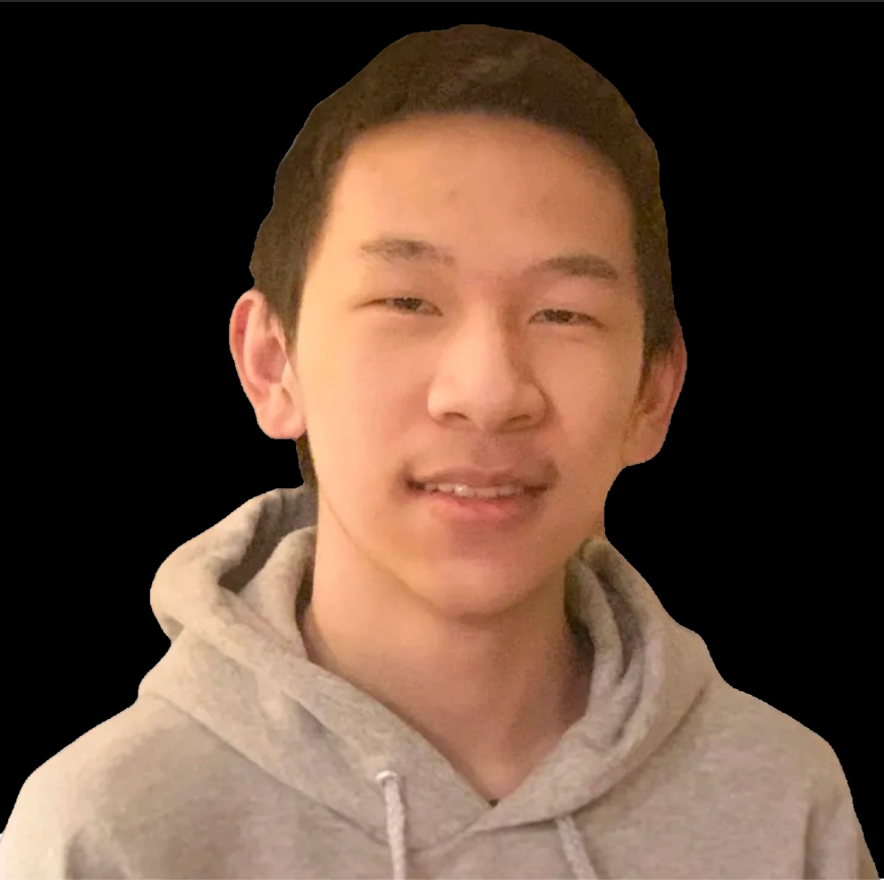

Hello!
Hanwen is a student at the George Mason University , and is currently studying to be a Game Artist/Game Designer.
He grew up in China and moved to the United States when he was 10. He started studying art with his Parents's support when he was 15 and have been enrolled in 3 different art programs. He has built a solid art resume here on this website.
Knowedge and Skills
Hanwen has used many digital programs for art and game design including Photoshop, ZBrush, Blender, Maya, and Unreal Engine. He is also well versed in traditional medias like Charcoal Painting, Acrylic, Paint Markers, or even Colored/Normal Pencils